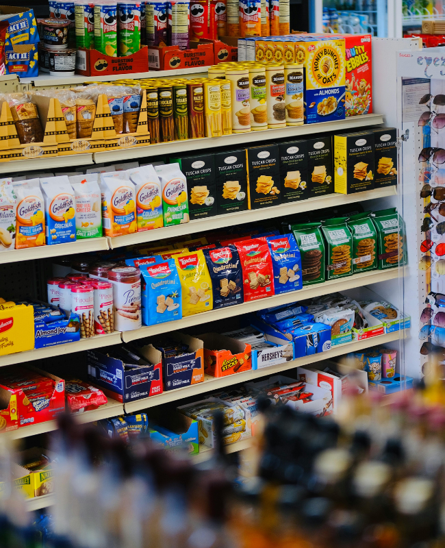

My Projects

Insurance Finance Processing Layer Mini-Design: Policy/Claims/Commission to GL
A mini-design of an Insurance Finance Processing Layer that bridges front-end policy, claims, and commission systems with the General Ledger. It focuses on how daily transaction events are validated, standardized, mapped to accounting rules, and reconciled to produce posting-ready and auditable finance data.


